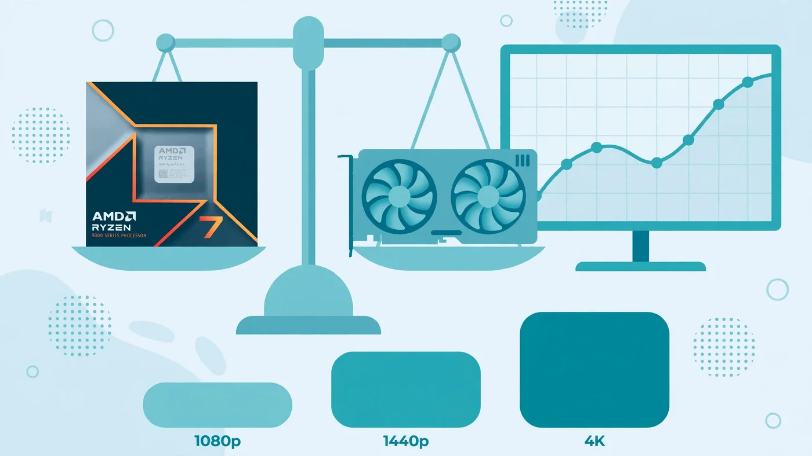

Best GPU for Ryzen 5 7600 and 7600X: Balanced Pairing Guide
The short answer to the best GPU for Ryzen 5 7600 is the RX 9060 XT 16GB if you play at 1080p, and the RTX 5070 or RX 9070 if you play at 1440p. The Ryzen 5 7600 is a fast six-core Zen 4 chip that punches well above its price at 1440p, where the graphics card does most of the work — but it has a ceiling, and cards above the RX 9070 XT or RTX 5070 Ti mostly buy frames this processor cannot feed at 1080p. This guide covers the balanced picks at each resolution, the VRAM trap to avoid, the cards to skip, and the power supply each pairing actually needs, so you buy the card your CPU can use instead of the card the box promises. The same advice applies to the 7600X: the two chips differ only in clock speeds and the bundled cooler.

Best GPU for Ryzen 5 7600: The Short Answer
The best GPU for Ryzen 5 7600 depends on your resolution, not your budget alone. At 1080p the sweet spot is the RX 9060 XT 16GB: fast enough for high-refresh gaming, with enough VRAM to last, and easy to power. At 1440p the sweet spot moves up to the RTX 5070 or the RX 9070, both of which the 7600 can keep fed in most games. The RX 9070 XT and the RTX 5070 Ti are the practical ceiling — usable, but you start leaving performance on the table at 1080p and in CPU-heavy games.
The one-line version: buy the RX 9060 XT 16GB for 1080p, the RTX 5070 or RX 9070 for 1440p, and nothing above the RX 9070 XT or RTX 5070 Ti. If you already own the card, our best CPU for RTX 5070 guide covers the same pairing from the graphics card's side, and our best GPU for Ryzen 5 5600 guide covers the same question on the older AM4 platform.
What the Ryzen 5 7600 Can (and Cannot) Feed
The Ryzen 5 7600 is a Zen 4 chip with six cores and twelve threads, a boost clock of up to 5.1 GHz, 32MB of L3 cache and a 65 W TDP. The 7600X is the same silicon clocked a little higher — up to 5.3 GHz, with a 105 W TDP — and ships without a cooler, while the 7600 includes AMD's Wraith Stealth. Both are unlocked, so you can tune them with Precision Boost Overdrive if you want, and both sit on the AM5 platform with DDR5 memory and PCIe 5.0. They also carry basic integrated graphics, enough for a display output while you wait for a card, but not for serious gaming.
What the chip can do is keep a mid-range card fed at 1440p, where the graphics card is the limit in most games. What it cannot do is feed a flagship card at 1080p high refresh, where the CPU sets the ceiling and a card far above the 5070 Ti class spends much of its time waiting. Independent scaling tests show the effect clearly: at 1080p the RTX 5070 loses much of its advantage over cheaper cards on a Ryzen 5 7600, and in some titles the RX 9060 XT matches or beats it. The chip also shows its six-core limit in simulation and strategy games. Our CPU vs GPU bottleneck guide explains how to read that pattern on your own machine.
Best GPU for Ryzen 5 7600 at 1080p
At 1080p the best GPU for Ryzen 5 7600 is the fastest card the CPU can actually use — and no faster. The RX 9060 XT 16GB is the pick: it handles high-refresh 1080p in competitive titles, runs modern AAA games at high settings, and its 16GB of VRAM means texture-heavy games will not choke it the way an 8GB card can. It draws around 160 W, so it is also easy to power. It also fits this CPU well for a second reason: when the processor is the limit, Radeon cards carry less driver overhead than GeForce cards, so the cheaper card loses less performance to the CPU ceiling.
The RTX 5060 Ti 16GB is the NVIDIA alternative at the same tier, and the better pick if you want DLSS, stronger ray tracing or CUDA for creator apps. On a tight budget, the RTX 5060 and the 8GB RX 9060 XT are solid 1080p cards, and the Intel Arc B580 with 12GB of VRAM is a genuine value option for high settings. Older cards such as the RTX 4060 or RX 7600 remain fine if you find one cheap second-hand — but buy them as a stopgap, because their 8GB of VRAM is already the limiting factor in newer games. If you do pick up a 4060, our best CPU for RTX 4060 guide shows which processors pair with it without wasting money. One caveat for esports: if your whole diet is CS2, Valorant or Fortnite at high refresh rates, the CPU matters more than the card, and the 7600 will cap your frame rate before any of these cards does — our CS2 bottleneck guide shows how to tell which part is setting your ceiling.
Best GPU for Ryzen 5 7600 at 1440p
At 1440p the balance flips, and this is where the Ryzen 5 7600 earns its reputation. The extra pixels shift the work onto the graphics card, the CPU gets breathing room, and a stronger card pays off properly. The best GPU for Ryzen 5 7600 at 1440p is the RTX 5070: 12GB of VRAM, around 250 W under load, and enough performance for high settings in modern AAA games. The RX 9070 is the AMD alternative at the same tier — 16GB of VRAM and strong raster performance — and the better pick if you play mostly raster-heavy games and want the extra memory headroom. Pairing either card with this CPU also unlocks Smart Access Memory, AMD's version of Resizable BAR, which lets the processor use the card's full VRAM for a small boost in supported games.
The RX 9070 XT and the RTX 5070 Ti are the ceiling. They work at 1440p, and in GPU-heavy AAA titles you will use most of them, but in CPU-bound games you will leave performance on the table, and at 1080p the waste is obvious. Buy one only if you plan a CPU upgrade soon and want the card to outlive the chip. The previous generation still has a place too: an RTX 4070 Super or an RX 7800 XT at the right price is a sensible 1440p card for this CPU — just check the price against the current generation first. Our resolution bottleneck guide explains why the same pairing behaves so differently at each resolution.
The VRAM Rule: Why 16GB Beats Raw Speed Here
The single most common mistake with the Ryzen 5 7600 is buying a fast card with too little memory. VRAM is the graphics card's own memory, and when a game needs more than the card has, textures spill over into system RAM and the frame rate collapses — stutter, hitching, and textures that load late. That failure looks like a bottleneck, but no CPU upgrade fixes it.
For a new card bought to last a few years, treat 12GB as the minimum at 1440p and 16GB as the safer buy. That is why this guide recommends the 16GB RX 9060 XT rather than the 8GB version, even though the two share a name and the 8GB model costs less: the 8GB card is already tight at 1440p with high-resolution textures. The RX 9070's 16GB is one of its real advantages over the RTX 5070's 12GB. Our VRAM guide covers how much memory each resolution needs. The same logic applies to used cards: check the exact VRAM figure on the listing, not just the model name — manufacturers sell the same name with different memory sizes, and the cheaper one is usually the 8GB version.
Cards to Skip With the Ryzen 5 7600
Some cards are bad matches for this CPU no matter how good they look on paper. The RTX 5080 and RTX 5090 are the clearest: the 7600 cannot feed them at 1080p, and even at 1440p you would be paying flagship money for performance a mid-range CPU cannot unlock. If you can afford a card in that class, buy a faster CPU first — our best GPU for Ryzen 7 7800X3D guide covers the chip that can actually use that tier of card.
Skip 8GB cards for any new 1440p build — the RTX 5060 8GB and the 8GB RX 9060 XT are fine at 1080p medium settings, but they are a dead end at 1440p. Skip very old budget cards such as the GTX 1650 or RX 6400 unless your budget genuinely allows nothing else: they were entry-level years ago, and pairing one with a capable chip like the 7600 wastes the CPU. Be careful with used cards that were run hard for crypto mining — a mined card is not automatically a bad buy, but it deserves a discount and a proper test, as our used PC bottleneck guide explains.
Power Supply: What Wattage Each Pairing Needs
The Ryzen 5 7600 sips power, so the power supply question is really about the graphics card. Add the card's board power, roughly 100 W for the CPU under load, and headroom for everything else, and you get the tier you need. The list below is a rule of thumb, not manufacturer guidance: always check the card maker's own recommendation for the exact model you buy.
- RX 9060 XT / RTX 5060 / Arc B580 class: a quality 550 W unit is comfortable.
- RTX 5060 Ti 16GB class: a quality 550 W to 650 W unit, with 650 W the safer pick.
- RTX 5070 / RX 9070 class: a quality 650 W unit.
- RX 9070 XT / RTX 5070 Ti class: a quality 750 W unit.
Wattage is only half the story. Check that the supply has the right connectors — the RTX 5070 class cards use the newer 12V-2x6 connector or an adapter, while older cards use 8-pin PCIe connectors — and that the unit comes from a known brand with a real warranty. A cheap high-wattage supply protects nothing. Our PSU guide covers what an undersized or failing supply really does to performance.
Will the Ryzen 5 7600 Bottleneck an RTX 5070?
At 1440p, the effect is small in most games — the RTX 5070 sits near full load, the CPU keeps up, and the pairing feels balanced. That is the healthy pattern: the GPU is the limit, which is exactly what you want in a gaming PC. At 4K the question disappears entirely, because the card is the limit in virtually every title.
At 1080p the story changes. CPU-bound titles — competitive shooters at high refresh rates, simulation and strategy games, open-world games with heavy crowd or physics simulation — can cap the frame rate while the RTX 5070 waits. Independent scaling tests make the point: with a Ryzen 5 7600 at 1080p, the RTX 5070's lead over the RX 9060 XT shrank sharply, and in some games the cheaper Radeon card pulled ahead. Test it yourself rather than trusting a calculator percentage: run your game with an overlay showing GPU usage and per-core CPU usage, as our bottleneck check guide explains. If the GPU sits near full load, the pairing is fine. If one or two CPU cores sit near full load while the GPU waits — and the frame rate barely changes when you lower the resolution — the CPU is the limit, and your next upgrade should be the processor, not a faster card. Our good bottleneck percentage guide explains how to read the numbers without panicking over them.
DDR5, EXPO and the Rest of the Platform
The Ryzen 5 7600 runs on AM5 boards with DDR5 memory only — there is no DDR4 option on this platform, so budget for DDR5 in the build. What matters most is running two sticks in dual channel at their rated speed: a single 16GB stick in single-channel mode costs real frames, and enabling the EXPO profile in the BIOS is a two-minute job many builders skip. DDR5-6000 is the widely recommended sweet spot for Zen 4, but any decent DDR5 kit in dual channel with EXPO on will serve this CPU well. Our single vs dual channel guide and XMP/EXPO guide cover both checks, and our RAM speed guide explains when faster memory really helps.
PCIe version is not a deciding factor here. The AM5 platform supports PCIe 5.0 for the graphics slot, but even the x8 cards in this class lose little on a PCIe 4.0 slot — do not upgrade a motherboard for PCIe version alone. Cooling is simple for the 7600, which ships with a stock cooler that is adequate with reasonable airflow — but the 7600X ships with no cooler at all, so budget for an aftermarket tower cooler if you buy the X chip. Check the whole system before you buy the card: 16GB of RAM is the realistic minimum for modern gaming, a nearly full SSD slows the machine down, and a dusty case with a choked cooler throttles everything. Our PC upgrade checklist walks through the full check in order.
How to Check Your Own Pairing Before You Buy
Guides give you the general answer; your machine gives you the specific one. Before you spend, run the CPU and GPU you are considering through the PC Bottleneck Calculator at the resolution you actually play at, with its methodology page open so you know what the estimate means. Then check the three things that decide whether the pairing will feel balanced: the card's VRAM against your resolution, the power supply's wattage and connectors, and the case clearance against the card's length.
After the card is installed, verify the pairing with a real game: an overlay showing GPU usage near full load and steady frame times means the money went to the right part. If the GPU idles while the CPU is pinned, your next upgrade is the processor, not a faster card.
Free PC Bottleneck Calculator — Estimate CPU and GPU balance for your resolution and workload: check whether your CPU, GPU or VRAM is the slow half of the frame on the PC Bottleneck Calculator (see its methodology page) before you buy a graphics card for your Ryzen 5 7600.
Conclusion
The best GPU for Ryzen 5 7600 is the RX 9060 XT 16GB at 1080p and the RTX 5070 or RX 9070 at 1440p, with the RX 9070 XT and RTX 5070 Ti as the practical ceiling. The 7600 is a strong six-core chip that earns its keep at 1440p, where the graphics card does the heavy lifting — but it is still a mid-range processor, and paying past the 9070 XT buys frames it cannot feed. Buy 16GB of VRAM if you want the card to last, match the power supply to the card with a quality 650 W unit for the 5070 class, and keep your RAM in dual channel with EXPO on. Check the pairing on the calculator before you buy, verify it with an overlay after you install, and upgrade the CPU — not the card — when the usage bars say the processor is the limit.
Frequently Asked Questions
What is the best GPU for Ryzen 5 7600?
For most Ryzen 5 7600 owners, the best GPU is the RX 9060 XT 16GB at 1080p and the RTX 5070 or RX 9070 at 1440p. The RX 9070 XT and RTX 5070 Ti are the practical ceiling for this six-core chip — anything faster mostly buys frames the processor cannot feed at 1080p, and the extra money is better saved for a future CPU upgrade.
Will a Ryzen 5 7600 bottleneck an RTX 5070?
At 1440p the effect is small in most games, because the graphics card does most of the work and stays near full load. At 1080p, CPU-heavy titles can cap the frame rate and leave the RTX 5070 waiting — in independent scaling tests the card lost much of its advantage over cheaper cards when paired with a Ryzen 5 7600 at 1080p. If you play at 1440p, the pairing is balanced; if you play competitive games at 1080p high refresh, a faster CPU would unlock more of the card.
Is the Ryzen 5 7600 good for 1440p gaming?
Yes. The Ryzen 5 7600 is a good 1440p gaming CPU with a mid-range card, because at 1440p the graphics card is usually the limit and the processor's six fast Zen 4 cores have enough headroom to keep it fed. Its limits show up at 1080p high refresh rates and in simulation or strategy games that lean heavily on the CPU, not in typical 1440p AAA gaming.
What power supply do I need for a Ryzen 5 7600 and RTX 5070?
A quality 650W power supply is the comfortable pick for a Ryzen 5 7600 with an RTX 5070, which draws around 250W under load. The same CPU with an RX 9060 XT 16GB is fine on a good 550W unit, while an RX 9070 XT or RTX 5070 Ti pairing wants a 750W unit. Buy a quality unit from a known brand rather than chasing wattage alone — a cheap high-wattage supply protects nothing.
Is 8GB of VRAM enough with a Ryzen 5 7600?
8GB of VRAM is enough for 1080p at medium to high settings in most games today, but it is already tight at 1440p with high-resolution textures, and it leaves no headroom for newer titles. For a new card bought to last a few years, 12GB is the sensible minimum at 1440p and 16GB is the safer buy — which is why the 16GB version of the RX 9060 XT, not the 8GB version, is the pick in this guide.
Sources
Official documentation referenced in this guide:
- AMD: Ryzen 5 7600 Processor Specifications (cores, threads, boost clock, cache, TDP)
- AMD: Ryzen 5 7600X Processor Specifications (cores, threads, boost clock, cache, TDP)
- AMD: Radeon RX 9060 XT (VRAM and specifications)
- AMD: Radeon RX 9070 (VRAM and specifications)
- NVIDIA: GeForce RTX 5070 (VRAM, board power and specifications)
- Intel: Locate and Resolve CPU-GPU Bottlenecks (per-core CPU usage vs GPU usage patterns)